//2024-05-13新增合成魔灵说明。
//2024-11-09新增符文筛选、高级设定等文字调整。
//2025-04-23调整一下近期改版内容
//2025-12-22撰写一下近期探索心得及目标。进入正题前先附上人权相片，本帐号是2025/12/09创立。
近期又无聊重新练了一支(全球服)，每个时期资源不同，特别是周年庆四月给更多。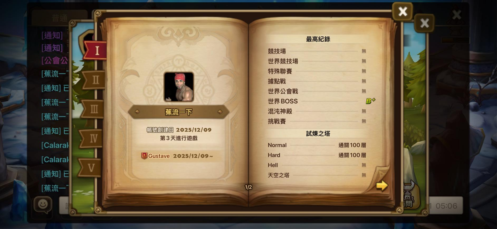
原作者历史截图：图内繁体文字保留原样，角色、符文与数值须结合本节核对说明。Z.前言：初来乍到之无悔路指引(更速懒人包)本节核对：先跟随召唤师之路和剧情推进，利用账号当前实际可领的新手福利，构建一支PVE队伍；这篇不以领取限时风凤凰为起点。
2025年后，30天福利奖励期以及「召唤师之路的(成长任务、挑战任务、全新召唤支援、召唤师欢迎活动)改动」，我们需要利用这些资源，专注在PVE的场域，后续就会超级轻松。所以我稍微增加文字的攻略，有需要特别留意的会用图片或特殊文字标注，其他不变，那就进入正题，先设定以下目标。条件说明 · 这篇主线是常规成长，不要求取得已结束的火热时刻满配赠送角色。新号个人福利有有效期；当前欢迎活动奖励已调整，不能把本文旧数量当成承诺。 核对依据
- 召唤师等级50等及区域拓展
由于每个区域都仰赖等级及剧情地图推展开放，例如钢铁、审判地下城(27等开放)、次元异界(剧情地图普通破关一轮后开放)等，初期随便装个「+血量/攻击/防御」的魔矿，角色就有大幅提升，所以要尽快达到这个等级；另外，次元地图可给的召唤师经验特别高，所以也建议及早开放做并作提升；每次升级会补满竞技场的羽毛，请先消耗完羽毛再升级，这样可以多领更多点数，去竞技场商店换召唤卷。条件说明 · 具体27级解锁、经验和升等补充机制是原作者记录；解锁与领取请以你当前账号的任务提示为准。正常推图和避免溢出资源的思路可以参考。 核对依据- 竞技场(新手赛区)
新手赛区，有NPC出现 或刷新，请优先打，可以领卷以及红宝等资源，其他玩家等级低就尽量打，打越高有阶段性奖励可以领取黄卷(3~5星)及传说卷(4~5星)等)。- 初期魔灵(资源可以大力的直升6星，三星以下的角色，技能请主动吃满，四星再评估)条件说明 · 这是可培养角色清单，不是开局一次性全部六星的购物单。先围绕正在打的剧情、巨人或塔组成一队，缺角色时按实际来源补齐。 核对依据
水属：水魔剑士(不要给他吃技能，过渡性角色)、水精灵(技能请优先吃满、爬塔神角)、水犬神、哥鲁达、水霍尔。
火属：火魔剑士(技能请优先吃满，地下城会用到)、火环刃舞女(地下城优质破防)、火格里芬(爬塔神角)、火犬神、火哈勒普
风属：风剑舞者(钢铁地下城好用)、风小仙子(活动会送6星，巨人地下城过渡性角色)、风鸟身、
光属：光仙女女王(活动会送)、光卡乌格(活动会送)、光哥鲁达、光格里芬、光犬神、
暗属：暗伊芙莉特(技能请优先吃满、靠活动合成)、暗伯爵(古代硬币换)、暗犬神(活动会送)、暗哈勒普(死亡地下城用)条件说明 · “活动会送”在这里指作者当时的新手奖励，并非如今每个新号都保证相同的角色、星级和符文。按你账号内欢迎活动领取；暗伊需准备素材合成，不能默认直接送满配。 核对依据- 剧情区域通关(普通、困难、地狱)
先通关全区域普通模式，开启次元黑洞(很重要)。
不用刻意刷魔灵等级，先通关全区域的地狱模式，拿完奖励，下次回来就只会待在特定区练等。- 地下城(巨人、龙等)
先设定7层以下通关即可，符文只留6星紫色以上，其他没价值纠正 · 不能在开局缺符文时直接照此清仓。先保留能满足速度、暴击、生存等需求的过渡符文，稳定推进后再逐步提高筛选标准。 核对依据，别浪费蓝石，主要仰赖活动符文及角色即可，按自动镶嵌符文即可通关纠正 · 自动配装只是工具，不保证通关；仍需核对角色技能、觉醒、速度顺序和生存。 核对依据，第8层之后再调整符文及出手顺序。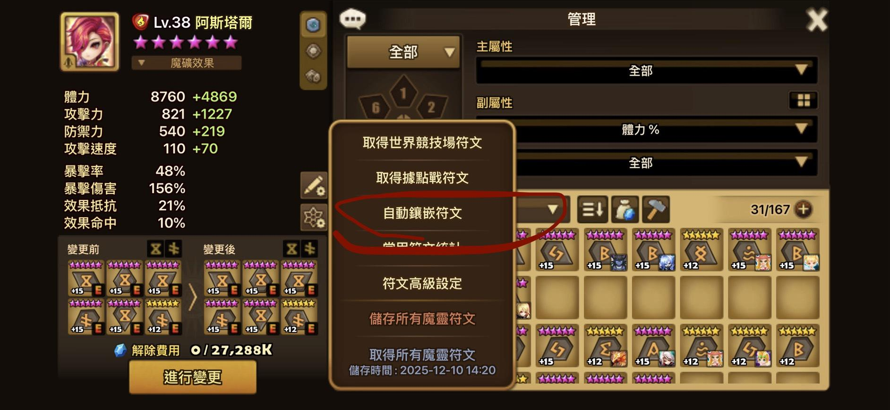
原作者历史截图：图内繁体文字保留原样，角色、符文与数值须结合本节核对说明。- 试炼之塔(普通、困难)
阶段性通关，打不赢通常是符文需要做调整，可以透过活动符文，无痛通关纠正 · 现在不保证取得作者同款赠送符文，也不保证无痛通关；能领取的新号福利以当前账号页面为准。 核对依据。
常用到的角色可以往下找，我有另外做一份参考队伍组成。- 次元黑洞(二觉之处)
主要重点：火格里芬需要赶快觉醒以及满技能（重复吃同样觉醒就可以啰），能打通第五层就努力刷，不行就降层刷。若没有3星格里芬的素材，可向大神请求帮忙随机开；其次建议暗犬神或风小仙子觉醒等，剩下看个人。X-1.召唤师欢迎活动(以消耗的体力，阶段开放)；本节核对：欢迎活动不是已经结束的火热时刻；保留入口和使用思路，具体奖励与阶段需要账号核对。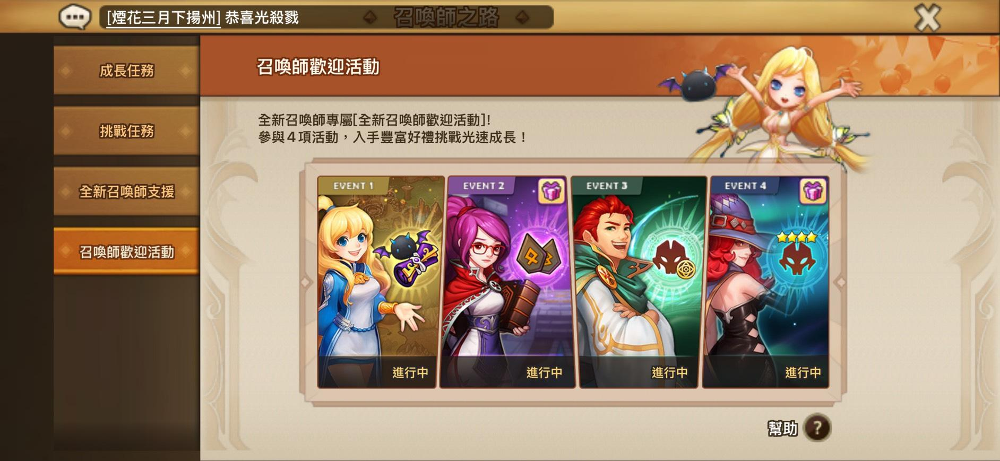
原作者历史截图：图内繁体文字保留原样，角色、符文与数值须结合本节核对说明。


- 「EVENT 1」：每2-8个小时可以领礼物。
- 「EVENT 2」：符文及素材等。
有了这区，新手刷到的6星蓝色以下符文(不含活动符文)，都可以卖了，因为不值得升级了。- 「EVENT 3」：合成魔灵素材区。
先领出暗伊的魔灵素材，其中暗雪人，在秘密地下城可以找到，或者请老手或大神帮忙开。
另外一只选火吸血鬼，不做素材用，以后要刷地下城当队长技能使用。
当然运气好有抽到，那更好哦!~- 「EVENT 4」：召唤4星三属角色。
活动快结束，再看缺什么再补，不要一开始就盲目开...。
备注：成长任务中有２种技能强化，一种是技能等级提升１，一种是技能全部提升（建议优先给水精灵、火魔剑士等）。条件说明 · 欢迎活动属于账号的新手福利，不因火热时刻结束而自动失效。但本文EVENT序号、2～8小时、合成素材/自选四星和技能奖励都需核对当前页面；官方2026-06更新曾调整EVENT1/2，不应照旧文直接选掉唯一机会。 核对依据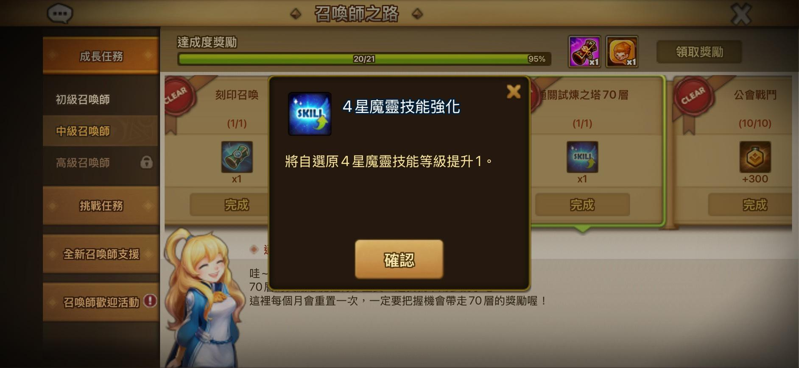
原作者历史截图：图内繁体文字保留原样，角色、符文与数值须结合本节核对说明。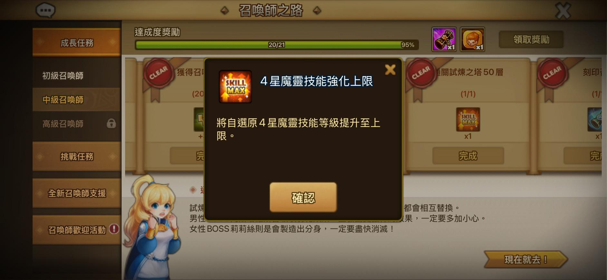
原作者历史截图：图内繁体文字保留原样，角色、符文与数值须结合本节核对说明。


X-２.后续小提点
本篇文章以快速升等技巧及各地下层稳定通关，且完成各项每日任务(必须)以及未来活动(深渊、试炼之塔、次元)， 最终成为各公会战力为导向。按照以下大标题走，希望能帮助您快渡过新手时期。当处处卡关时候，就以每日任务、召唤师之路、每月试炼之塔 交替作为目标。每日任务：每日[必须][肯定][绝对]要解，完成任务150天送一只原五(神秘召唤卷机率0.5%)。条件说明 · 每日任务值得做；150天及胎五星奖励的具体领取条件以当前长期任务页面为准，本次未从你的账号验证。 核对依据符文强化、挑战剧情关卡不一定要解，其他强烈建议，慢慢成长型玩家一定要。
0.活动原五自选活动建议(如果有的话...)。本节核对：可选阅读：只有现在确实有自选机会时才看。没有自选可以跳过，继续常规开荒。
- 风凤凰(巨人地下城速刷、练等首选)
- 水兵器(龙地下城速刷)
- 火魔镇(普通/困难塔/公会暨据点战好用角)
- 水战斗天使(普通/困难塔/地狱塔好用角)
- 风龙骑(速度队的小克星、公会迷宫小关卡中的降速王者)
- 水龙骑(公会迷宫水王的霸主)
- 水雷帝(地狱塔抄作业好用角-几乎无法替代)
以上都是依据每月日常活动评估，如上述角色都拥有了，再到文章底部社群连结咨询大佬。条件说明 · 只有账号当前确实开放对应自选、并包含这些角色时才参考。并非现在有免费的五星自选；已结束的火热时刻自选不能再领。角色优先级还取决于现有魔灵。 核对依据1.召唤师技能点配置(21等开始可以点，点错没关系，只是前面痛苦一点，后面技能都点的完)本节核对：保留技能点用途说明。等级门槛、上限与加成数值以当前游戏为准，按正在使用的主力投入。
分三大区块(A战斗、B公会、C其他)
- 先说"不用"优先点：
C其他-神秘塔攻击、神秘塔攻击速度、魔力产生速度、魔力时储存上限。 - 再来谈那些必须先点：
A战斗[影响全域]-攻击速度、攻击力、爆击伤害优先，其他属性看 、主力有谁(暗犬:暗属攻击力、火吸、火犬:火属攻击力...等)。
C其他(重度游戏玩家、斤斤计较玩家型)-
能量补充速度 与 能量储存上限(每次升等将补满能量与竞技场羽毛(羽毛分母固定10))
※100等前，小技巧补充：召唤师等级快升等前，先将竞技场羽毛用完，升等自然补满，若前者都不够使用，可使用次元能量让召唤师等级提升。反复操作，可以快速升级也能有效投资其他地下城。
快速升级懒人包(提醒)：升级会补满的为＂能量＂、＂竞技场羽毛＂；不会补满的为 次元能量、世界竞技场羽毛、特殊联赛羽毛。
召唤师生等所需经验值=消耗能量、次元能量 与 竞技场羽毛，消耗越快可更快升级。
B公会[影响据点战、公会战、迷宫等]-全部。
2.魔灵培养(等级、进化、技能升级)及魔灵合成本节核对：先练当前主队，升级/进化/升技分清用途。不要为了补体力批量升六星或盲目吃掉稀缺魔灵。
- 练等级：使用水魔剑 或是群攻角色，刷 剧情关卡(火山或艾登丛林)，练等即可。不建议吃魔灵升等。
- 进化：没别的，吃魔灵(1~5星)或天使怪3~5星进化，进化可使用自动筛选。
唯一需要注意的就是素材来源，未知卷轴、碎片或二星以下魔灵来源，可透过剧情关卡 或地下城取得。三星魔灵也可以用来进化，但建议等熟悉角色后再来使用。没能量也没红宝了，就看看仓库有哪些 原五星 或好用的三四星角色，直升6星，换取能量+200 以及属性天使怪。纠正 · 不要只为了补能量就给任意仓库魔灵升六星。先确定它是当前队伍或后续必用角色，再投入进化材料；奖励金额也以当前界面为准。 核对依据
- 技能升级：
吃相同魔灵(非同属也可) 或恶魔怪。
二觉魔灵技能要升级，必须得吃二觉魔灵。
特例：光仙女王 可吃 仙女升级技能；吸血鬼伯爵 可吃 吸血鬼升级技能。
补充，新手常问 恶魔怪要给谁吃?前期为了快速爬塔及通关地下城，我优先投资暗伊夫里特、火格里芬二觉(一定要二觉才吃)、水精(四星)，以上都是二、三技能满即可。 其他随缘(风凤、火暗影爪...等常用地下城角色)。条件说明 · 这是作者追求进度的资源取舍，不是统一最优解。恶魔怪稀缺；可通过同系列/合成/二觉素材升技的角色，先比较替代成本与急迫程度。 核对依据2a.魔灵合成及各角实用性本节核对：保留合成来源和长期规划参考，实用性排序属于作者观点；按当前合成阵及技能查看材料和收益。
由上至下由左至右介绍，并且是魔灵从开服至今，依序开放合成的角色顺序，大致说明功能以及其它属性的功用，后续由于恶魔怪缺乏，可仰赖合成并食用，以节省恶魔怪开销。原则抽到以下合成角色之外的其他属性角色，可以靠合成方式提升技能等级。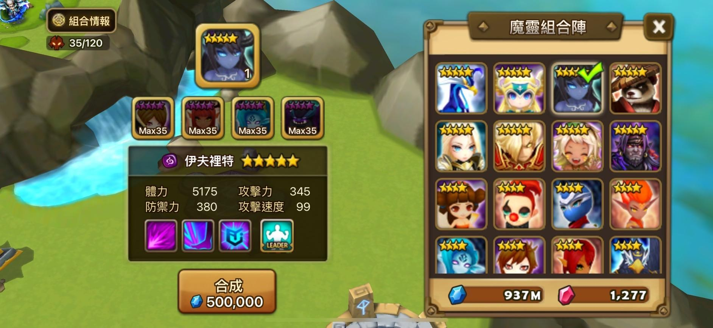
原作者历史截图：图内繁体文字保留原样，角色、符文与数值须结合本节核对说明。★★★★★(用颜色表示，新手时期会用到的角色，灰色说明代表不太实用...)

- 水凤凰：早期地下城、爬塔泛用角色，渐渐被改版后的暗依取代。不推优先合成。
- 风瓦尔基里：需要搭配其他魔灵才够强的角色，缺点会乱射。例如：火上犬、水鸟头、光海王等。不推优先合成，除非有抽到前面角色。
- 暗伊芙莉特：现阶版本，首选合成、优先吃满技能角色之一，好用到不行。优选！
- 火熊猫：早期异界裂缝、团战好用角色，现代人都求快，渐渐没落，不过公会迷宫打最终大王可以加减摆放。不推优先合成。
- 光派拉丁：爬塔、公会、据点战防守、进攻都好用的角色，除暗依以外，前三首选。
- 火雷帝：公会、据点战进攻 及 公会迷宫、异界裂缝，都好用的角色，除暗伊以外，前三首选。
- 风魔镇(风马桶)：纯辅助角色，源源不断的奶量。主要补血、免疫、解状态。除暗依以外，前三首选。
- 暗鬼王：控场角色，解状态。后期公会战、据点战、RTA角色。想开始准备的人，可以练。
- 水魔导兵器：
目前没什用纠正 · 这里只能保留为作者不建议新手优先合成的个人意见，不能当成当前全玩法强度结论。水魔导兵器与文首“水兵器”通常所指的水属性武器大师是不同系列；先核对完整名称。 核对依据，新手初期用不太到的角色，不建议先合成。还有一个很搞人的素材是水卡乌格...。
★★★★(用颜色表示，新手时期会用到的角色，灰色说明代表不太实用...)
- 风九尾狐：主要拿来合成，其他泛用性少，不介绍...。五属实用性：火>暗/光>风/水
- 火小丑：主要拿来合成。五属实用性：风/水>光/暗>火
- 水忍：特殊联赛之RTA、公会战、据点战很实用的进攻角色，五属实用性：火/水/暗>光>风。
- 火精灵：早期爬塔神角，因前期资源缺乏以及未来使用性低，渐渐没落，后续合成给水精灵吃。水/暗/风>光/火
- 水温蒂尼：水属性防御％队长，主要作为肥料及穿戴三套决心(全体防御%)卡水属队长技能使用在火属小王，需搭配二觉水亡灵铠甲(全身吸血有关的，都戴上)。五属实用性：风/暗>火>水/光
- 风吸血鬼：早期巨人第10层速刷神角，后期有深渊及巨人10毒爆队伍，渐渐没落。五属实用性：火>光/暗/水>风。(如果你光暗抽的到，与玩家对战场域，基本上爽爽过..?)
- 火魅魔：主要拿来合成或给其它属性吃。五属实用性：水/光＞火/风/暗
- 水鸟头：主要拿来合成或给其它属性吃。"前期"可搭配风瓦射一波。五属实用性：暗/风/光>水>火。
- 风功夫妞：攻克钢铁地下层角色之一(若有风剑舞者，就不用了)，不用吃技能也好用。五属实用性：风/水/暗/光>火
- 火竖琴魔导：据点战、公会战常见防守角色，进攻也好用。五属实用性：火/风/光/暗>水
- 水武士：主要拿来合成。五属实用性：光/暗>风/水/火
- 火吸血鬼：不合成对不起自己的角色，前期超实用...。五属实用性：火>光/暗/水>风。
- 风魔剑：主要拿来合成。五属实用性：火/光>水>暗/风。(水魔剑不建议吃技能，只是拿来刷火山)
- 风树精：主要拿来合成。巨人10层(五星通关即可，后期可以合成)或 前期爬塔使用(对付 暗狼人)。
- 水晶代：某款游戏的角色（但不做联名角XD)，主要拿来合成。五属实用性(强度?)：暗>光>风/水/火。
- 火鬼怪公主与犬：主要拿来合成。五属实用性(未知?)：光/暗/水>风/火。
- 水鬼武者：经过回合数越多(含对方)，后期PVP扫场角色。五属鬼系列不吃爆率、爆伤的角色，好用到各自发展成自己的形状(?)。场上保护得宜，赛末扫荡。
- 火环刃舞女：速刷地下成群攻角色，常用在PVE地下城速刷用。
- 风半人马骑士：据说是为了刷巨人来用的角色，但实际上也快不起来，还是建议新手使用风异变者，比较安全。条件说明 · 这一节是作者在不同年代给出的实用性评价，包含“没用”“前三首选”等个人结论，并非2026年11月的强度榜。不要混淆水魔导兵器与文首“水兵器”昵称，先查角色完整名称、技能与合成阵。 核对依据
3.符文本节核对：符文基础和按角色需求配装是长期参考；筛选标准应随库存提高，新号不要直接套后期自动出售规则。
魔灵角色百百种，每个符文都有特定角色的去处。诚如前言所说，以新手时期需要留的符文为导向。浅谈符文部分(是重点，但也不是重点XD)
符文总共有1~6个位置1号(固定攻击)，附属不会出现防御%、防御固定值。3号(固定防御)，附属不会有攻击%、攻击固定值。5号(固定体力)。2号[攻击、体力、防御(固定 / %)、速度]4号[攻击、体力、防御(固定 / %)、爆击率(%)、暴击伤害 (%)](固定主属都卖，不用考虑，除非有英雄(紫符)或传说(橘符)、速度有+20以上)6号[攻击、体力、防御(固定 / %)、效果抵抗(%)、效果命中(%)](固定主属都卖，不用考虑)，除非有英雄(紫符)或传说(橘符)、速度有+20以上)条件说明 · 4/6号固定攻、体、防通常作为过渡，先确认替换后队伍仍能通关；高速度等特殊用途不要机械出售。2号速度应保留。 核对依据符文以+12为例，附属性共会放入前面所提及的词缀4个，以及对应位需要的属性；
- 攻击(固定 / %) - 部分通用（优先：吃攻击力打手及辅助[水舞女等])。
- 体力(固定 / %) - 部分通用（优先：坦、辅助）。
- 防御(固定 / %) - 部分通用（优先：坦、辅助）。
- 攻击速度 - 通用 ，辅助为最大宗，其次是打手(开场秒人的魔灵例外)。
- 爆击率(%) - 打手
- 暴击伤害 (%) - 各系数型打手(自身攻击、体力、防御或敌方体力%等)
- 效果抵抗(%) - 部分通用（优先：坦、辅助）。
- 效果命中(%) - 通用( 影响技能命中率)。
各地下城掉落资讯及简述效果：
未来及非常后期（RTA世界竞技场、据点战、公会战）特别用符号★画计，都是以战术上给予威胁做为考量，不代表其他符文烂，只是先有未来的目标，好着手符文的挑选，及省下蓝石。由于近期改动(2025年下)，新手玩家获得有英雄(紫色)、传说(橘色)的符文，频率提高不少，稀有(蓝色)程度以下符文，在通关各地下城，以及试炼之塔之后，可以开始筛选掉，不需要再保留，专心在英雄(紫色)、传说(橘色)就好。以下我在加注一些极端想法，其他传说符文不确定是否可用，可以分享给社群或公会友人帮忙评估是否留用。巨人地下城：迅速(+25%基础速度)★；
主要留速度，其次「打手」留（攻击％、速度、爆率％、爆伤％）。
辅助等其他（速度为主、攻体防％及命中％为辅。绝望(+25晕眩率)★；主要留速度及三围（攻击％、体力%、防御%）及命中％为辅。「打手」符文，留攻击％、速度、爆率％、爆伤％
刀刃(+12%爆击率)★；
猛攻(+35%基础攻击力) ★；
「打手」符文，留攻击％、速度、爆率％、爆伤％祝福(+15%基础体力)；后期留「传说」就好，主要留速度及三围（攻击％、体力%、防御%）及命中％、抵抗%为辅。龙 地下城：爆走(获得追加回合+22%)★；主要留速度，其次「打手」留（攻击％、速度、爆率％、爆伤％），辅
助等其他（速度为主、攻体防％及命中％为辅。
这套符文范用在PVP场合上，符文附属组合多变。
反击(反击+15%)★主要留速度，其次「打手」留（攻击％、速度、爆率％、爆伤％），
辅助等其他（速度为主、攻体防％及命中％为辅。
守护(防御力+15%)忍耐(效果抵抗+20%)保护(护盾3回合，体力15%)集中(效果命中+20%)
守护、忍耐、保护、集中，后期留「传说」就好，
主要留速度及三围（攻击％、体力%、防御%）及命中％、抵抗%为辅。死亡地下城：激怒(爆伤+40%)★
「打手」符文，留攻击％、速度、爆率％、爆伤％意志(免疫1回合、三套3回合)★
主要留速度，其次「打手」留（攻击％、速度、爆率％、爆伤％），
「辅助」等其他（速度为主、攻体防％及命中％为辅。
这套符文范用在PVP场合上，符文附属组合多变。应报(当失去7%体力攻击提+4%，三套效果叠加)★
「打手」留（攻击％、速度、爆率％、爆伤％），
「辅助」等其他（速度为主、攻体防％及命中％为辅。
这套符文范用在PVP场合上，符文附属组合多变。破坏(减少敌人最多4%体力血量，计算以伤害量的30%；三套效果叠加，但至多破坏60%总血量)★-RTA世界竞技场较不适用。
「打手」通常用不太到，破坏比较适合用慢慢消耗对手的坦克使用，
「辅助」等其他（速度为主、攻体防％及命中％为辅。
这套符文范用在据点战及竞技场上，符文附属组合多变。精灵地下城：斗志(我军攻击力+8%，含自身)★；PVE可帮助主要打手推高攻击力，如风凤速刷巨人组合。
斗志都用在速刷用，前期留打手或辅助符文就好，主要留攻击％、速度、爆率％、爆伤％及命中％辅。决心(我军防御力+8%，含自身)★：PVE可帮助其他魔灵推高防御力，如水犬的技能围剿拉动其他三只（一次四支魔灵出手）或PVE 公会迷宫 防御型队长魔灵穿戴，让其他防御打手伤害更高。刚毅(我军体力+8%，含自身)命中(我军效果命中+10%，含自身)韧性(我军效果抵抗+10%，含自身)封印(封印敌方符文效果；限制 绝望、吸血、爆走、应报、反击、破坏、封印)★斗志、决心、封印等在PVP都有大神分享更有趣(阴险)使用方式。决心、刚毅、命中、韧性、封印以上后期留「传说」就好，主要留速度及三围（攻击％、体力%、防御%）及命中％、抵抗%为辅。以上2件式套装效果都是叠加上去的，例如：2套刀刃(四件刀刃)=24%爆率各深渊地下城限定：1.无形符文(与任意一套成套，但有2个以上之套件未完整，则失效)2.无形魔矿(无限定类别或属性装备)新手符文挑选？
-以角色类别导向挑选(不挑套组)
本篇仅讨论 六星符文，五星以下都是垃圾~不要再看了，除非速度有+20以上。各符文掉落与升级时就能决定它的走向（打手、辅助、坦克用）。大概注意各颜色能强化的范围即可；蓝色(稀有)随机提升其2附属(改版后，紫色与橘色获得机率提高，蓝色基本上可以直接卖了)条件说明 · “五星以下垃圾、蓝符直接卖”是作者形成一定库存后的标准，不是新号从第一天就照做。先保留实际能用的速度、暴击与生存过渡件。 核对依据紫色(英雄)随机提升其3附属橘色(传说)随机提升其4附属-掉落时，建议「附属性」挑选
- 以攻击速度为主+ 体力、攻击、防御%...等非固定数值的组合(辅助 或炸弹、鬼系列等或补不足数值)，
- 以爆击率%为主+ 爆伤% / [攻击%or防御%or体力%]的组合(给打手位，攻打、体打、防打或补不足数值)。
基本上 攻击速度 都是必须的，越后期越显著，除非组合队伍有风龙骑(限速)，或纯扛伤害用。
蓝色(稀有)附属性2个词缀，无固定数值，初期有攻击速度速度可以拚看看+12以上。不用特别留了。- 紫色(英雄)附属性3个词缀，2个你需要的词缀。(例外，词缀有攻击速度，可以拚看看三跳，低于+16可以卖)
- 橘色(传说)附属性4个词缀，3个你需要的词缀。(例外，词缀有攻击速度，可以拚看看三跳，低于+16可以卖)
以上+3 、+6 、+9，渐渐能看出符文的定位。※以蓝色符文为例子，符文位子4号爆击伤害%，附属性为爆击率%、固定体力；+3时 爆击率↑；继续强化+6，爆击率↑，这颗短期就是你好用的符文。+3时 固定体力↑，可以卖了，升上去也是浪费蓝石。-以符文主、附属挑选导向建议保留以下附属性有爆击率% 或 攻击速度，都优先保留(速度建议+12以上、爆率建议+10以上)，但后面会越留越多，自己要设定一个门槛哦~
综上，不要因为套组不实用，错杀好符文，初期都能帮助您补一些爆率或攻击速度，意外的话还能组一套(2件式)。
攻击角(系数:攻击力为主)-常见符文挑选
以攻击力系数为主的符文建议优先选择留存(排除鬼武者系列及炸弹伤害角色(不吃爆率、爆伤)与风猫女(不太需要爆率)、风鬼王(不需要爆率)等比较特别存在。)
- 2号攻击%or攻击速度 ；附属性优先：1.爆击率%、2.攻击速度、3.其他(体力%.效果命中%)等。
- 4号暴击伤害 (%)；附属性优先：1.爆击率%、2.攻击速度、3.攻击力%、其他(体力%.效果命中%)等。
- 6号攻击%；附属性优先：1.爆击率%、2.攻击速度、3.其他(体力%.效果命中%)等。
注意：猛攻、激怒、刀刃2~6号附属性有"固定攻击"，也别急着卖，有时地下城就差这数值，以达到速刷门槛。以防御系数为主的符文建议优先选择留存(排除风熊猫、水科学怪人、火武道家...等，不太需要爆率等的"追加伤害(又称刮痧)"角色
- 2号防御%or攻击速度 ；附属性优先：1.爆击率%、2.攻击速度、3.其他(爆伤%、体力%.效果命中%)等。
- 4号暴击伤害 (%)；附属性优先：1.爆击率%、2.攻击速度、3.攻击力%、其他(体力%.效果命中%)等。
- 6号防御%；附属性优先：1.爆击率%、2.攻击速度、3.其他(爆伤%、体力%.效果命中%)等。
辅助角-常见符文挑选
- 2号攻击速度；附属性挑：效果命中%、其他随意(攻击%、体力%、防御%都好)。
- 4号体力%、防御%、攻击%；附属性优先：攻击速度为优选，其他随意(体力%、防御%都好)。
- 6号体力%、防御%、攻击%；附属性优先：攻击速度为优选，其他随意(体力%、防御%都好)。
辅助通常都第一个出手，能通关就好，后面在公会战或其他地方有所表现再调整即可。
坦克角(体力、防御型)-常见符文挑选
2号体力%、防御%、攻击速度；附属性优先：效果抵抗、其他随意(体力%、防御%、攻击速度都好)。4号体力%、防御%；附属性优先：效果抵抗、攻击速度，其他随意(体力%、防御%都好)。6号体力%、防御%；附属性优先：效果抵抗、攻击速度，其他随意(体力%、防御%都好)。拿来扛的就是站好，乖乖吸引属性相克AI的炮火。对方火属，AI套路打风属。三属以此类推。火>风>水>火对方暗属，AI套路打光属。光暗以此类推。光<>暗例外:我方被破防、烙印或残血，或挑衅、威胁等状态，或部分技能特例，则不照上面走。
上述角色在公会战或据点战，未有提条、提速或攻击速度队长的角色情况下，建议绿字有+100左右，低于+50以下，容易发生别人动2回合。
※续文...各个地下城基础10层都稳定通关后，可以利用近期更新的内容，做更人性(懒惰)化的调整；以下直接套用设定就可以，剩下的就是交给时间与运气，未来就与大神同台登场。
-符文筛选分享(某年某月系统更新)。
该系统是为了快速筛选自己(大众)想要的符文，都是六星紫色以上，请确保自己有办法，在各地下城第10层以后，稳定通关后，再设定!! ，不然会更严重拖慢游戏进度。
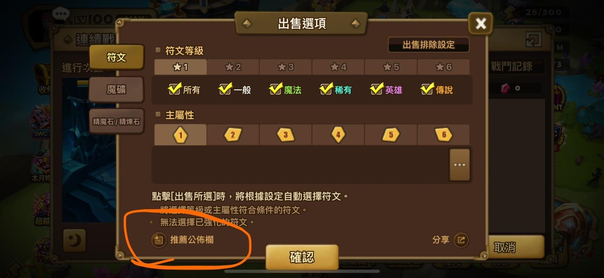
原作者历史截图：图内繁体文字保留原样，角色、符文与数值须结合本节核对说明。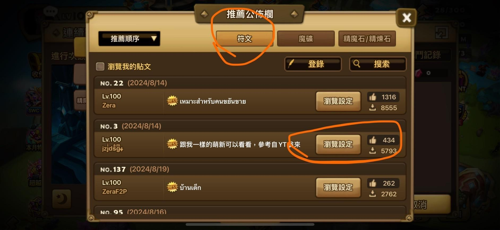
原作者历史截图：图内繁体文字保留原样，角色、符文与数值须结合本节核对说明。


-符文高级设定功能(202410系统更新)。
进到画面设定您要的数值，符文自动帮你带入，并提供个数值最高的评比(高至低的排序)。先完成前面的符文筛选设定，后续会有比较多中高阶的符文可以使用，新手时期符文太少不建议使用，会很容易自卑...要什么数值都达不到(哭哭)。条件说明 · 作者也强调先稳定通关再上筛选规则。不要直接复制截图的自动出售设置，先预览命中哪些符文，确认过渡队不会因此缺装。 核对依据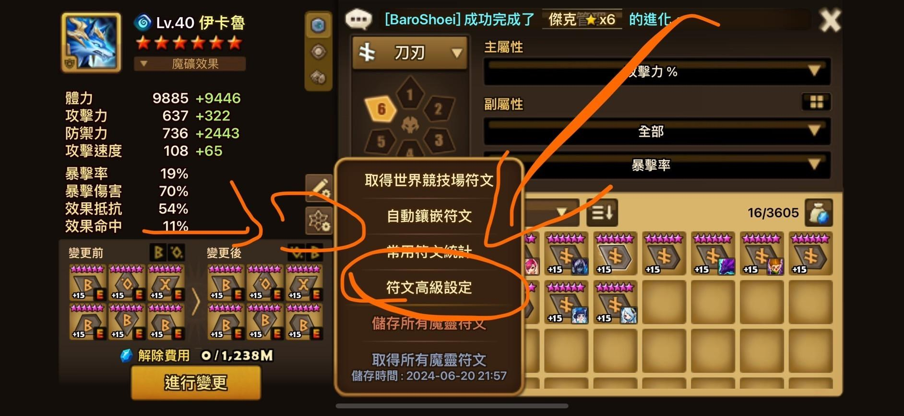
原作者历史截图：图内繁体文字保留原样，角色、符文与数值须结合本节核对说明。

4.各式商店(区分建筑及介面商店)本节核对：保留商店资源取舍。商品名称、价格与限购随版本变化，以实际页面为准；保留足够魔力石用于配装。
仅秀出及建议新手要购买的部分；
魔法商店(建筑)&公会魔法商店(建筑,加入公会才有)
- ★任何时期都要买：传说卷碎片、光暗卷碎片、刻印召唤书碎片、神秘召唤卷(3-5星)、其他4星召唤书碎片(公会商店)，传说符文（好符再买）。
- ★新手前期必买(进化素材管道之一)：其他3星召唤书碎片(公会商店)、未知召唤书(1~3星)、二星以下魔灵(普通魔法商店)。
- 蓝石建议都预留 百万在身上，不然到时候就只能哭着用红宝换蓝石(亏惨)。
介面商店(介面)
★基本（特殊、★商店、★古老货币、古代结晶）
- 特殊(后期可投资1350光暗召唤卷、其他不重要)
- 商店(★补充能量、★次元能量、竞技场出战卷)：
补充能量I、II、III 、IIII，买补充能量IIII(150红宝换500体)最优惠，但建议能量储存上限满等再说。
次元能量，通关角色都练过后，就无需再购买。把红宝投资在"补充能量III"就好，别拿来召唤用。条件说明 · 能量包名称、150水晶/500体力以及III/IIII序号可能随版本或账号福利不同，原文前后也不统一。只按当前商店显示的实际单价和上限选择，不照旧序号购买。 核对依据
竞技场出战卷(前期用不到，后期竞技场挤名额才会需要)。 - ★古老货币：前期魔灵碎片兑换推荐"暗伯爵吸血鬼(异界魔兽、地下城)"、"火暗影爪(异界魔兽、地下城、RTA)"，后期看着办及其他人建议，我自己是都买传说卷轴和能量500体。
-建设（纯疗愈心灵）
-名誉（竞技场、世界竞技场、联赛、公会）
- ★竞技场：恶魔怪、光暗碎片、神秘召唤卷、三属卷
- ★世界竞技场(前期)：光暗碎片、传说卷碎片、神秘召唤卷、三属卷。
有特殊喜好可以搜集SKIN。 - ★特殊联赛：买时装SKIN用，和换一些硬币。
- -推荐（课金礼包）不讨论。
- -特价（课金礼包）不讨论。
-限定（★每日特别好礼+25红宝、超值礼包）不讨论。
5.卡斯洛斯地下城(巨人、龙、死亡...等)本节核对：目标先是稳定通关，再考虑深渊和提速。以下队伍均需对应角色、觉醒、技能、符文与出手顺序，不保证看名单即可通关。
早期魔灵未有深渊(hard、hell，也称11、12层)前，流行推[三水犬]、[毒爆队]等，现有深渊地下城，获得紫符(英雄)、橘符(传说)远大10层以下；以及未来活动都将与深渊系列挂勾，故本篇以深渊为主，不鼓励新手花费太多时间在非深渊地下城，除非你真的刷不过。
下面所有地下城，队伍基础攻击速度建议绿字+40~50以上(非常重要、非常重要、非常重要)，打手爆率爆击率建议有75~85%，后续补速度或爆伤及伤害即可，只要能通关后，就不用再调整符文。
以深渊难易度来看（心中排名）：巨人＞龙＞钢铁＞精灵/死亡 >审判。
前面三个符文就算太差，靠容易取得的阵容可轻松通关；审判与精灵，符文太差容易翻车，而死亡深渊最吃队伍组合(如果抽到关键角色，就轻松许多)。
以下是近期创立(2025-12-09)所使用角色，可简易通关各大深渊地下城，供新手参考。条件说明 · +40～50速度、75～85%暴击及“轻松通关”来自作者原队配置，既不是每个副本通用门槛，也不是当前账号的成绩保证。先确认技能/二觉、出手顺序和生存，再看当前难度下的连续战斗结果。 核对依据
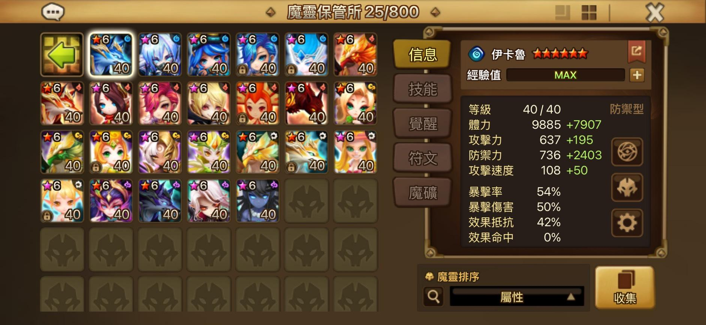
原作者历史截图：图内繁体文字保留原样，角色、符文与数值须结合本节核对说明。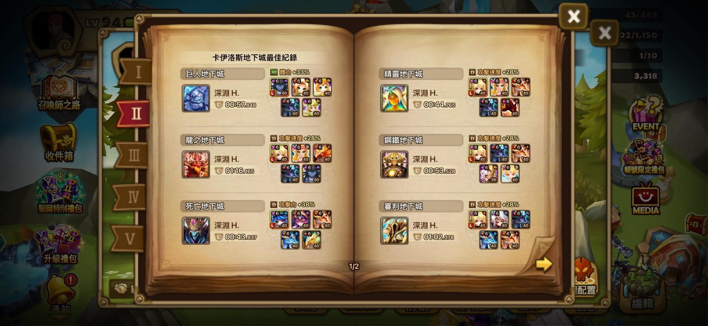
原作者历史截图：图内繁体文字保留原样，角色、符文与数值须结合本节核对说明。


巨人地下城注意事项
1.以最少回合数或角色最少攻击段数，
2.使用单段伤害角色，并且造成最大伤害为主(造成敌方体力%伤害)。
3.增加王关未命中、降低攻击力。
4.增加我军攻击力、增加防御力及补血，以维持队伍续航力。
5.消除不利于队伍的状态，例如"降防"。
进入战斗前先设定，BOSS战攻击顺序，优先攻击中继BOSS、地下城BOSS，后续自动比较顺利。

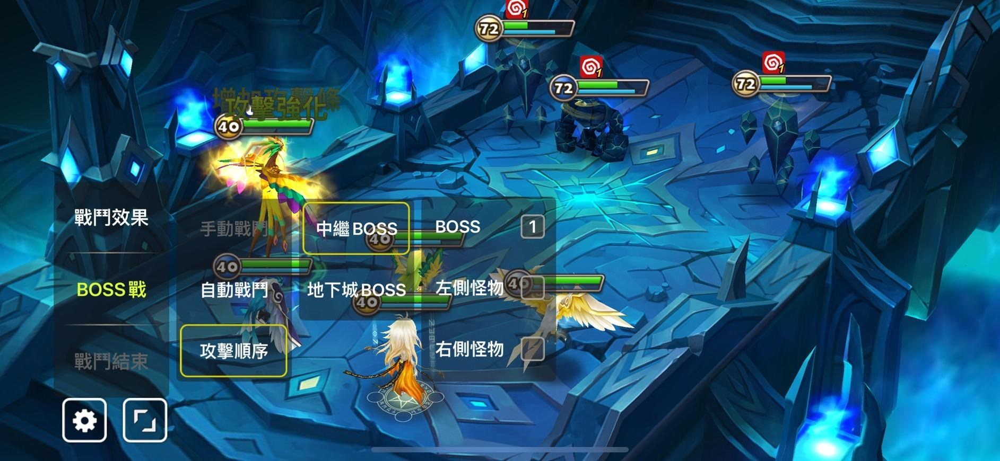
原作者历史截图：图内繁体文字保留原样，角色、符文与数值须结合本节核对说明。以下为最容易取得的队伍及符文
- 暗伊夫里特队长(+30%体力)(爆走或迅速)；主要靠二技能打体力%伤害，2号速度、4号爆伤、6号随意(附属性有爆击%+攻击速度为优先，爆伤随意)
- 风鸟身女(迅速、杂符)/风格(迅速、杂符)；2号速度、4号防御%、体力%、6号防御%、体力%
- 风小仙女(迅速或绝望、杂符)；2号速度、4号防御%/体力%、6号防御%、体力%
- 光犬(迅速、杂符)/光仙女王(迅速或爆走)-符文太差时，爆走容易翻 ；2号速度、4号防御%/体力%、6号防御%/体力%
- 暗犬二觉(新手)/风猫女二觉(新手)/风人马/光亚马/光格/暗皮/风异变(推荐)；2号速度or攻击%、4号爆伤%、6号攻击%，体力%
第5个打手比较特别，光亚马/光格 吃攻击%数很低，建议可以2号获或6号选体力%或防御%续命。
由于这个队伍风小仙二觉有助于地下城稳定，并且活动有送六星风小仙，不用白不用~。条件说明 · 仅在你当前账号确实领到时成立；否则按当前任务/召唤等来源取得并培养，不能依赖旧文赠送。 核对依据巨人整体队伍出手顺序，风鸟身 or 风格 > 风小仙女 > 光犬神 >打手（暗犬二觉、风猫女二觉/光亚马/暗皮/风异变，新版本:风人马(可以合成)）

龙地下城注意事项
1.不要让王动!!!
2.不要让王在残血时候攻击!!!
3.不要让王在我方中毒伤时候攻击!!!
进入战斗前先设定，BOSS战攻击顺序，优先攻击中继BOSS、地下城BOSS，后续自动比较顺利。
以下为最容易取得的队伍及符文
- 暗伊夫里特(爆走或迅速)；主要靠二技能打体力%；2号速度、4号爆伤、6号随意(附属性有爆击%+攻击速度为优先，爆伤随意)
- 光卡乌格(爆走/迅速、杂符)；2号速度、4号防御%or体力%(or随意)、6号效果命中%
- 火格里芬(爆走/迅速、杂符)；2号速度、4号爆伤%or爆击率%、6号效果命中%
- 暗犬神(激怒/猛攻/刀刃/迅速、杂符) ；2号攻击%、4号爆伤%、6号攻击%
- 火吸血鬼队长技能(+28%攻击速度)；2号速度or攻击%、4号爆伤%or爆击%、6号攻击%。（火吸百爆为优先，速度次要）
地下城稳定关键：火吸百爆；光卡效果命中高(65-80%)；火格里芬2、3技能满，效果命中高；地下城速度快关键：火吸爆伤攻击高、火格里芬、暗伊爆击与爆伤高。先求稳再求快。常刷龙H可以慢慢换队伍的符文(除了暗犬神，这区无他需要的符文)。龙整体队伍出手顺序，火格烈芬 or 光卡乌格 > 暗伊>暗犬神>火吸血鬼条件说明 · 保留龙队出手顺序与满暴火吸的配装思路；命中65～80%等是作者建议，需按当前Boss与技能机制检查，不等于必定命中或稳定通关。 核对依据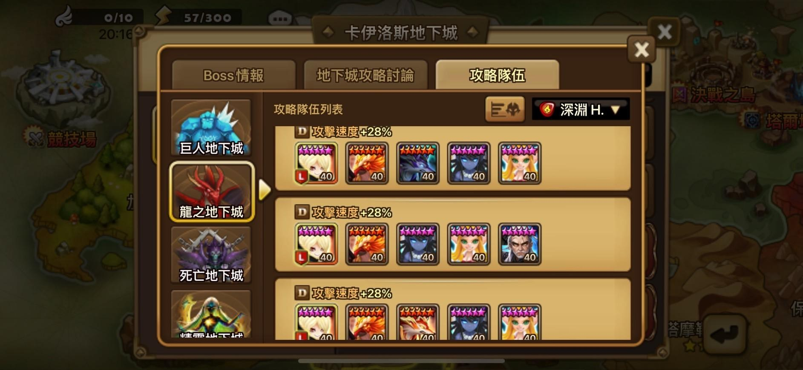
原作者历史截图：图内繁体文字保留原样，角色、符文与数值须结合本节核对说明。死亡地下城注意事项(不建议新手刷，队伍组成困难，效益太低)
建议刷10层or 9层，取得6星免疫 或激怒符文为主。1.以最多段数魔灵为主要。2.王固定抓队伍攻击力最高的魔灵通关队伍参考一组即可。以下为最容易取得的队伍及符文
- 水炮女(爆走或迅速)；主要破防；2号速度、4、6号随意(体力%、攻击速度，活着最重要)
- 水犬二觉(守护、爆走)；2、4、6号防御%，40等时候通用：防御绿字+2416；纯地下城：防御绿字+2380。条件说明 · 水犬神的+2416/+2380为作者配置阈值，取决于二觉、技能、基础防御和战斗加成，不能套用为所有账号/所有副本的固定最低值。 核对依据
- 火犬二觉(爆走、杂符)；2号速度或攻击%、4号爆伤%or爆击率%、6号攻击%
- 暗哈勒普二觉(爆走、杂符) ；2号攻击%或攻击速度、4号爆伤%、6号攻击%
- 光格里芬二觉(激怒/刀刃)；2号攻击%、4号爆伤%or爆击%、6号攻击%，爆率至少85%。
死亡地下层整体队伍出手顺序，水炮女 > 水犬 > 暗哈勒普 > 火犬 > 光格里芬二觉 / 火魔剑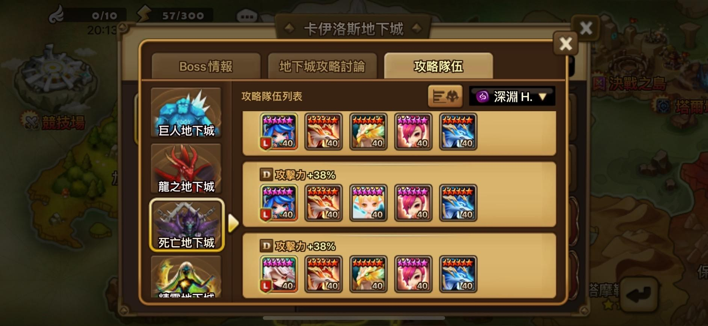
原作者历史截图：图内繁体文字保留原样，角色、符文与数值须结合本节核对说明。钢铁深渊地下城注意事项
1.不要让王动!!!2.王被动带有晕眩，建议带免疫角3.王被动带有护盾，建议带解除状态与无法获得状态。进入战斗前先设定，BOSS战攻击顺序，优先攻击中继BOSS、地下城BOSS，后续自动比较顺利。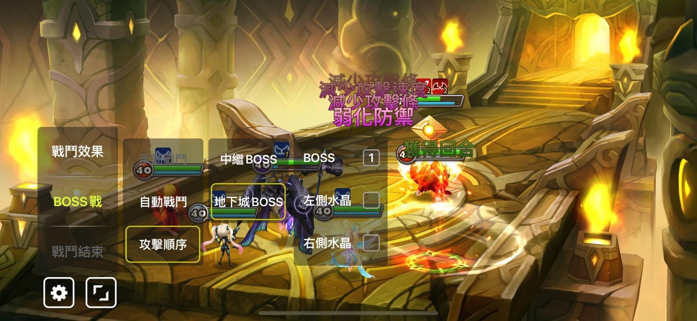
原作者历史截图：图内繁体文字保留原样，角色、符文与数值须结合本节核对说明。以下为最便宜最实用最容易取得的队伍及符文。
- 光仙女王(爆走或迅速、杂符)，2号速度、4号防御%or体力%、4号防御%or体力%。
- 光卡乌格(爆走/迅速、杂符)，2号速度、4号防御%or体力%(or随意%)、6号效果命中%。
或者 火犬神二觉(激怒/猛攻/刀刃/迅速、杂符) 2号攻击%、4号爆伤%、6号攻击%。- 风剑舞者(优先使用)、风功夫妞(爆走/迅速、杂符)，2号速度、4号爆伤%or爆击率%(or随意%)、6号效果命中%。
- 暗犬神(激怒/猛攻/刀刃/迅速、杂符) 2号攻击%、4号爆伤%、6号攻击%。
- 火吸血鬼队长技能(+28%攻击速度)，2号速度or攻击%、4号爆伤%or爆击%、6号攻击%。（火吸百爆为优先，速度次要）
钢铁整体队伍出手顺序1，风剑舞者/风功夫妞 > 光卡乌格 > 光仙女王 > 暗犬神 >火吸血鬼
钢铁整体队伍出手顺序2(新版本)，风剑舞者 > 光仙女王 > 火犬神 > 暗犬神 >火吸血鬼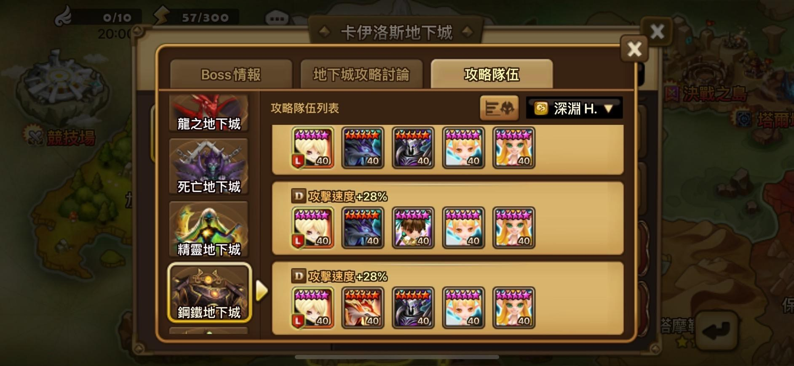
原作者历史截图：图内繁体文字保留原样，角色、符文与数值须结合本节核对说明。审判深渊地下城注意事项 (不建议新手刷，队伍组成困难，效益太低)
建议刷10层or 9层，取得绿色、蓝色矿为主，乱塞补攻击力或体力(防御)即可。后续再依需求换词缀。1.不要摆退条角色2.摆减少攻击速度的角色（减少王攻击速度，可减伤）3.新手或符文不好，建议优先清除左右塔。4.新手懒人关键角色:不要摆暗属脆皮角色，摆暗属坦角(暗死亡骑士)或 暗南瓜(超高速，被动有护盾，减少翻船)，队伍中再补一个补师。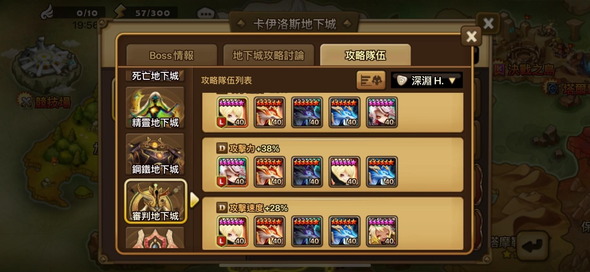
原作者历史截图：图内繁体文字保留原样，角色、符文与数值须结合本节核对说明。精灵深渊地下城注意事项(不建议新手刷，符文用不太到，投资效益太低)
建议刷10层or 9层，取得斗志符文(蓝色以上即可)为主，乱塞补攻击立即可。后续再依需求换词缀。深渊地下城会翻很正常，老手也很常发生(这地下城太吊诡XD)1.全火属2.增加爆率以下为最便宜最实用最容易取得的队伍及符文。（火环要用抽的）纠正 · 官方v8.8.7（2025年10月）已加入火环刃舞女的合成配方，现在不再必须抽取。先查看合成阵与已有材料。 核对依据
- 火环(激怒/猛攻/刀刃/迅速、杂符) ；2号攻击%、4号爆伤%、6号攻击%。
- 火猛兽猎人/ 火打手 (激怒/猛攻/刀刃/迅速、杂符) ；2号攻击%、4号爆伤%、6号攻击%。
- 火地狱犬(爆走/迅速、杂符)；2号速度、4号爆伤%or爆击%、6号效果命中%。
- 火犬神(激怒/猛攻/刀刃/迅速、杂符)； 2号攻击%、4号爆伤%、6号攻击%。
- 火吸血鬼队长技能(+28攻击速度)；2号攻击%、4号爆伤%or爆击率%、6号攻击%。
精灵整体队伍出手顺序，火环 > 火地狱犬 >火犬神 >火猛兽猎人 >火吸血鬼。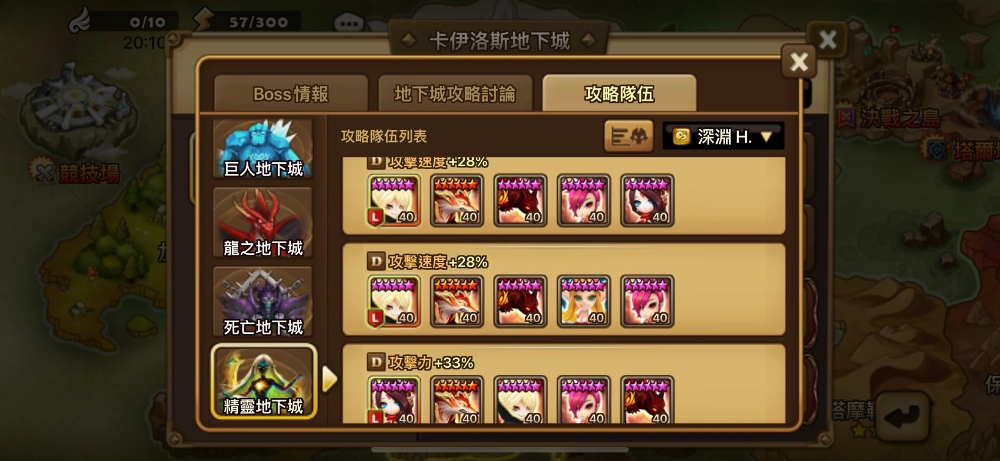
原作者历史截图：图内繁体文字保留原样，角色、符文与数值须结合本节核对说明。


6.竞技场、跨服竞技场＆世界竞技场、特殊联赛本节核对：你在Global服，所有赛程以游戏内倒计时为准。区分竞技场、世界竞技场、挑战赛与特殊联赛的奖励。
本篇介绍新手如何度过前期难关，如果想要快速拚金一金二，半年应该是没有办法的，除非课金或运气很好一路顺遂，抽到好的角色或刷到好的符文。先设定各位是不课金的朋友，以及先尝试游玩的玩家。主要目标是希望各位刚入门玩家，以最快最轻松获取最大效益(名誉点数、名誉勋章、名誉之证)。由于前期很多资源抽角，都在竞技场与公会系列的活动，各位千万别放走可获得4星、5星的机会，希冀能蹭就蹭！
- 竞技场（名誉点数）
每个NPC获胜后，可获得名誉点数[5~6点)以及些许红宝(2~3)，
阿米勒(点数少[3点]、不给红宝)除外。前项NPC 新手必刷，除非其他玩家打不赢，否则别勤奋刷。因此建议新手防守放一只2星角色，让分数容易掉下来。由于很多玩家在结算前都会以放推方式(摆一只)降分，来找寻相同 同温层的玩家(?)。我们需要利用这样的机制，利用 战斗纪录，以复仇方式打回。你复仇他，他也就复仇你，互相复仇，互相轻松洗。(非常重要)银区复仇成功名誉点数是5点，比阿米勒还多2点，所以合乐而不为?202504改版后，容易掉落到铜区，视自己能力摆放防守，维持在银区洗点数。后续有点实力再改变防守队形，打上金区或更高殿堂。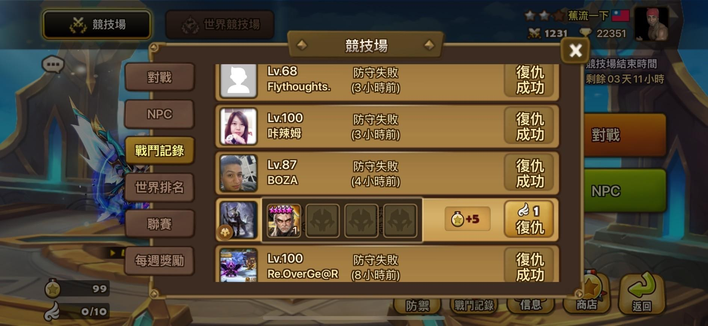
原作者历史截图：图内繁体文字保留原样，角色、符文与数值须结合本节核对说明。竞技场二周结算一次，以亚服为例星期日晚上22:00(PM10:00)结算。条件说明 · 这里只给了亚服结算时间，你在Global服不能直接照北京时间周日22:00安排。以游戏内当前赛季倒计时与服务器时区为准。 核对依据羽毛恢复时间 ：1支/60分。

- 跨服竞技场（以点数积分换商品）
一季会出现一次，以伺服器（亚洲、中国、欧洲等）对伺服器的对战。条件说明 · 跨服内容已按联赛组织匹配，不能只按服务器名称理解对手与资格；请看当前跨服竞技场规则。 核对依据
- 世界竞技场（名誉勋章）
每个赛季都会提供免费的角色供玩家使用，当然你也可以准备自己的。
老生常谈，我们一样用蹭的，用免费角打出自己的一片天，打不赢就弃赛，输赢都有奖励(赢：再点数，输：任务、降分），有着丰厚的召唤卷、传说碎片、光暗碎片等，所以一定要刷哦。纠正 · 奖励、任务进度与段位变化要分开看：2026年败场可按敌方剩余魔灵数获得商店勋章，低段位还有晋级保护；不能理解成随意弃赛必有奖励、输局就能一路降段。按当前模式内规则判断。 核对依据结束时间：世界竞技场右边面板会显示。世界竞技场羽毛恢复时间：30支/一日。
- 挑战赛(2025下半年更新)
这个模式可以让新手玩家使用高阶符文以及魔灵，挑战各区段的玩家，获得一些更多游戏体验及经验值(RTA)，连胜十场有奖励、获胜总计100场有奖励，通常结算时间个别30天或60天。玩家可以利用探索或其他自动战斗，短暂打一场竞赛，获取一些报酬，增加抽到魔灵的机会(次数)。结束时间：好像没有~。纠正 · 挑战赛有明确期限。官方v9.3.8公布本期为2026年11月1日至12月31日，并说明赛季间重置排名与记录；以当前模式倒计时为准。 核对依据结论：有时间就加减蹭，至少获胜总50场以前奖励都不错，55场以后，都是红宝和三星卷，无课玩家加减蹭。条件说明 · 挑战赛有赛季期限，场次奖励和记录按赛季调整，原文天数与奖励档位仅作旧版示例；以当前倒计时为准。 核对依据
- 特殊联赛（名誉之证）
7.次元黑洞(二觉)本节核对：作者的二觉优先级可参考，不是一律按表全练。先围绕当前卡点选择，缺少五阶段队伍时可以降层。该赛季无提供免费角色，但限定使用某些角色，例如：限定四星以下、限定三属五星以下、限定20星以下...等。我们一样用蹭的，准备自己的角色加减蹭，换点SKIN。特殊联赛羽毛恢复时间：30支/一日。
8.试炼之塔(普通Normal/困难Hard/地狱Hell)本节核对：保留控场、解弱化、针对特殊敌人换装的思路；队伍来自历史记录，塔层和当前技能可能变化。在每个副本的[攻略情报-攻略队伍]都有揭示，本篇不再讨论。单纯讨论觉醒顺序(心中排名)及原因；
- 火格里芬(龙地下城、爬塔)
- 暗犬神(龙、巨人地下城、爬塔、异界团战)
- 风小仙子(巨人地下城)
- 火犬神(地下城、爬塔速刷、异界团战)
- 水犬神(死亡、审判地下城、爬塔速刷、异界团战)
- 光格里芬(死亡/巨人地下城、地狱塔)
- 风猫女(巨人/钢铁地下城、异界团战)
- 火最高元素(异界团战、公会战、据点战进攻用)
- 光流浪剑士(异界团战、PVE竞技场防守用)
- 火哈勒普(异界团战(还好)、地下城，觉醒素质有提升(202410更新二觉))
- 暗女巫(专攻爬塔、控场及毒)
- 火死神(毒爆队、爬塔) 巨人或钢铁深渊为目标，可不练。
- 火小仙女(毒爆队、爬塔)巨人或钢铁深渊为目标，可不练。
※其他...不在通关所有地下城考量下，故不列入心中排名。
9.异界的裂缝(五属魔兽)本节核对：保留各属性Boss所需的群攻、拉条、回复、多段与输出方向，角色和评分需按当前账号逐步达成。直接贴2024/02/20时，使用的队伍。
队伍组成：
99.99%是水精灵(队长)、火格里芬、光卡乌格、光仙女王、暗伊(没暗伊前用其他控场角或打手)
其余0.001%是暗伊(队长)、光仙女王、光犬神、风小仙子(防御BUFF)、水精灵。
- 暗伊夫里特(5星)，合成角色，二技能满技。
- 水精灵(4星)，新手任务可以拿到，二、三技能满技。(202409左右更新，透过新手任务可以取得。)
- 火忍者(4星)，新手任务可以拿到，特殊关卡才会用到。(由于活动只能任选1支四星角色，如果有抽到火忍，可留着看缺什么角色再补。)条件说明 · 塔队伍是作者2024年的记录，不是本月逐层验证方案。水精/火忍等新手自选的现行清单、次数先看账号页面；不要为了少数关卡提前消耗唯一自选。 核对依据
- 火吸血鬼(4星)，合成或召唤，一二技能满技，伤害会比较高，不建议技能以恶魔怪食用。
- 火格里芬(3星)，你随便抽都能抽到，时间的问题，但必须进行二觉，且二三技能满技能，才能感受到他非常之强大， 优先二觉角之一。
- 光卡乌格(3星)，超强单体破防、退条。请别人或自己开光属地下层，随机出货，技能很好满技能。
- 光仙女王(3星)，新手任务可以拿到。吃仙女系列就能满技能，不练吗?
- 光犬神(3星)-免觉醒，破防、消状态、补血拉条，技能容易满；一些王关需要特定组合才使用。
- 暗犬神(3星)，新手任务可以拿到，或等不及开暗属地下城。
建议新手先集中符文在爬塔与地下城的角色。维持每日及每月奖励比较重要!!普塔、困塔第一个月通关后，第二个月开始就能每10层自动，搭配其他地下层一起刷，缩短时间。条件说明 · 通关记录与自动爬塔解锁规则以当前塔界面为准，别把“第二个月自动”理解为所有楼层无条件跳过。 核对依据新手常卡在 双光瓦 、火龙关卡，没有火忍该怎么办?此时将暗伊的符文脱掉，符文2、4、6号，改 二防%一体%，或二体一防%，以及魔灵AI出手机制，用暗伊去扛光属性的伤害即可通关，靠辅助光仙女王补血即可。通关后，再换回原本打手符文即可，建议队伍 「暗伊(队长)、光仙女王、光卡、水精、火格」。新手卡在暗雪人、暗狼人，该怎么办?暗雪人被动提条；暗狼人爆击扣血，解决办法应减少光属性攻击(属性差本身爆率会提高)、暗伊撑爆击率也要改换装备 或用队伍内准备1~2只能上毒的角色(爆率要低)[风树精、火死神、火精等]。地狱塔 碰第一层就好，因为最简单，其他层数 看心情，不要花费太多心力，等符文或角色池齐全再爬也不迟。
10.异变者(三属公、光暗母)本节核对：保留风异变者作为巨人方向的培养参考，技能选择、材料与暴击条件要核对游戏当前版本。攻略概念简述，打手伤害要够，拖越久越不利，并且以刷到S(击杀通关)为目标，时间久了自然就SSS了。队伍也是攻略情报上可以找到，故不讨论队伍部分。魔兽队伍共通性概念，脆皮的放后面(通常是主要攻击手，可以放4只)，皮厚的放前面(放2只)，找不到坦角，就放逆属在前面(打火属，摆水属在前面)。至于精魔石（更换附属）随缘刷，全留蓝色(含固定属)以上就好，等符文条件更优了，再往上筛选。焰火魔兽：群攻角为要件、不要风属，其他都好，例:水魔剑等。如果队伍伤害够高，也不用群攻了冰寒魔兽：攻击速度、攻击提条为要件，不要火属其他都好，例:风格等暴风魔兽：恢复能力为要件，不要水属其他都好，例:光仙女王、光犬、火哈勒普等。漆黑魔兽：多段伤害为要件，例：光仙女王、双子(环刃舞女、旋刀武姬)系列、魔剑系列等光辉魔兽：伤性极高打手为要件，例：暗犬神等有古代硬币可以在商店兑换，吸血鬼伯爵，全体吸血并且要伤害有伤害、要攻击段数有段数，只差没有群攻技能。除了暴风魔兽的场合，可以使用水属性 水双子(环刃舞女、旋刀武姬)，达成高伤速刷。
11.异界团战本节核对：这是开荒之后的三队目标。先有可重复通过的队伍，再考虑速刷；不要把这里的专用配装当成全角色通用数值。技能走向纯建议，其他如果有可以替代，可自行更换，以最终期为考量，不浪费时间改技。不推荐我没在使用的组合，单纯以捷径最大效益为主。公的(风属)用在巨人Hell地下城。不用满技能，打巨人hell效益就吓吓叫，优先推荐召唤及技能点选。符文建议:激怒刀刃，没有其他，专打巨人的暴率请拉到85%，有暴率队长技能可以自行调降。母的(暗属)用在爬塔洗技能使用。召唤了，但我小号地狱塔还爬不过，素材够了就随缘召唤，随缘点技能吧。符文建议：爆走，没了。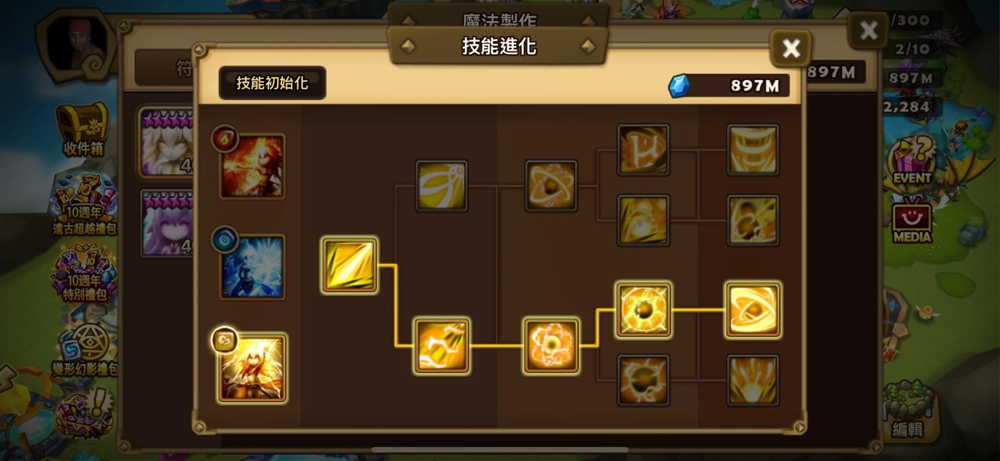
原作者历史截图：图内繁体文字保留原样，角色、符文与数值须结合本节核对说明。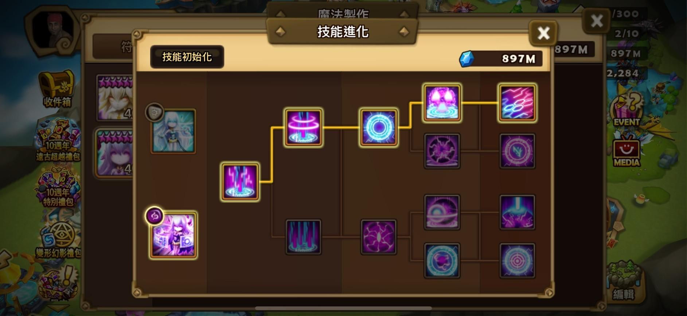
原作者历史截图：图内繁体文字保留原样，角色、符文与数值须结合本节核对说明。


12.探索战斗&艾美莉亚的幸运本节核对：先达到稳定刷取，再利用探索战斗与幸运提高效率；原文固定消耗、秒数和场次不作现版本保证。-前言-
天生孤僻，喜好自己来，故不讨论与其他玩家组队部分，以下以自组三队来建议。另外前面已经配好各魔灵的符文了，也有一定的基础知识，进入到异界团战就会相对轻松许多，对应放魔灵就可以了。与其他五属龙概念相同，前排扛伤害，后排输出，并排入三队魔灵；先提供最终队伍(稳定)，如果你都有以下角色，就先朝这方向走；如果刷不过，建议刷第四层即可，加减蹭蹭「免体力」活动。至于精炼石（增加附属数值）随缘刷，全留蓝色(含固定属)以上就好，等符文条件更优了，再往上筛选。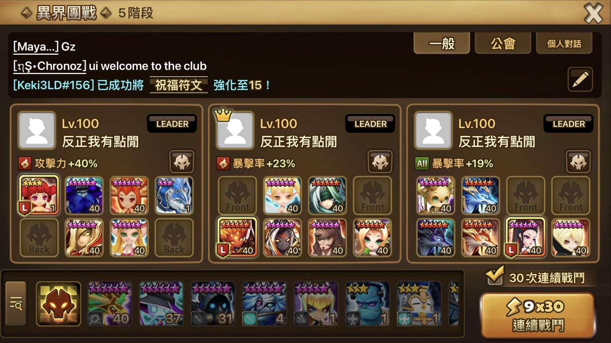
原作者历史截图：图内繁体文字保留原样，角色、符文与数值须结合本节核对说明。火属性队长技能40%(可换光伊+30%全属攻击力)、火属性爆击率+23%、爆击率+19%由于前项队长技能的加成；
火属打手爆率至少58%；上面暴率23%+19%=42%，单纯出场团战的火属，58%就很够用。其他属性打手爆率至少81%。(风猫女例外)剩下配伤害(攻击力或爆伤)以及攻击速度就好，前面地下层已说明，速度+50绿字就好，统一牢记，异界团战也配相同，大家都一样，出手顺序就没什么有问题。
唯独风猫本身攻击速度有点快，建议+30~+35即可。条件说明 · 团战是后续目标，先凑齐18只角色和配装。“免体力活动”只有实际开放时才有；58%/81%暴击依赖本节叠加队长技，速度绿字也不保证自然排好顺序。 核对依据另外需要注意一点是，异界团战除了与其他地下城相同诟病翻车的地方(没有给予BOSS退条、破防或降攻)。开场王会随机朝一组喷向降攻、降速、忘却，容易提高翻车机率。打手或拥有被动效果的魔灵(风猫女、光流浪、火猛兽猎人、火吸等)，都会因为这一喷(降攻、降速、忘却)翻车。所以打手符文基本上都要配一组意志，或配一个消状态或提供免疫的队伍，听起来很饶舌。
- 第一组 火雷帝组合
火九尾(三斗志套)、暗维京(二斗志、意志)、
火哈勒普(二斗志、意志)、水熊(二斗志、意志)火雷帝(激怒、意志)、光卡乌格(杂符、意志)
- 第二组 虾兵蟹将组合(如果你都抽不到) 或 水双子系列
光仙女王(爆走/杂符都可，一速约绿字+100以上)、
光流浪剑士(二斗志、意志)、火最高(杂符、意志)、
火暗影爪(杂符、意志)、火猛兽猎人(杂符、意志)、
风猫女(激怒、意志)
光流浪剑士：能减少我军队伍的伤害，可以降低因我军打手血量或防御少的窘境。但不能减少其他两组伤害。另外一组被喷就死，也可以练暗死骑坦，效果有差异，理念差不多。
- 第三组 三犬组合(又称做自己队：使用其他地下城共用符文即可)，
风哈格(可换 火希尔菲德，但要配意志)(杂符，一速约绿字+100以上)
水犬神二觉(做自己，称防御到+2,416)暗犬神二觉(做自己)、火犬神二觉(做自己)
火罗刹(三斗志或杂符，可换其他爆率队长)
火吸血鬼(做自己)风哈格：开场可以消状态，无状态可以上免疫，技能吃三星的火哈格、水哈格即可，非常之平民角色，并带有防御队长技能。初期组不到速刷队伍，可并存使用。11a.异界团战-不起眼的魔灵推荐
(给无法使用上述方式通关的你)本节核对：角色功能清单可作凑队备选，技能描述和优先级为作者记录；按当前技能说明和队伍缺口选择。通关解析：
- 对于王需要几种负面状态：降攻、破防、烙印、禁补；其他(影响较少)：降速、退条(影响较少。上毒、晕眩完全无用。条件说明 · 这是作者概括的异常状态用途，是否可退条、上毒或控制应以当前Boss技能的免疫说明为准；不能把这句当已实测的完整机制表。 核对依据
- 对于我方需要正面的状态：增攻、增防、补血、持续恢复；其他(影响较少)：抗暴(影响较少)、提条、增速、对峙
- 慢速单人队伍，队长技能「防御%」、「体力%」、「效果抵抗%」、「攻击力%」、「爆击率%」为优选；
「攻击速度」不建议，每只出手基础速度不同，容易搞乱出手顺序，对整体通关也没太大帮助，故不推荐。搭配前期公会战、据点战常使用的角色，推荐四星以下、以及合成魔灵，如果你迟迟无法通关，就从下面几只角色挑起来凑一凑；但仍建议要带出场的最好都六星满等，以防素质偏差被喷就挂。
- 前排坦克与辅助(碎念:前排要有自知阿，主要属性撑血量以及防御)
★★★★★火熊猫(合成)-防御队长30%-破防、解状态、持续回血状态、未命中、降攻、降速、无法恢复、风魔阵术师(合成)-补血、免疫、上攻。(放前排记得补一套免疫)★★★★风哈格(抽)-防御队长20%-消状态、免疫、退条、降速、提条。风温蒂尼(抽)-降速、补血、消状态、免疫。风狂战士(抽)-[就是块肉] -如果真的找不到前排角，最后的备胎选择。风竖琴魔导(抽)-退条、补血、消状态(单一)、免疫(全体)，非首选，且是最后选择。火竖琴魔导(抽)-退条、补血、消状态(单一)、免疫(全体)，非首选，且是最后选择。水死亡骑士(抽)-禁补、降攻、破防、持续恢复、消状态、免疫、对峙。暗死亡骑士(抽)-禁补、降攻、破防、队友减伤。★★★(除了光暗，你再抽不到真的也太惨了吧?)火科学怪人(抽)-[就是块肉]、退条、高伤。水战斗猛玛(抽)-[就是块肉]、补血、增防。水犬神二觉-[就是块会拉人一起攻击的肉]。风企鹅(抽)-消除1个状态、减CD，增速。非首选，爬塔加减用(极少)。风铠甲(抽)-[就是块肉]、破防、降速。光流浪剑士(抽、秘密地下城)-[是块有用的肉]、降攻、破防、队友减伤(不含自身)光犬神二觉(抽、秘密地下城)(放前排要补点防御和血量)-破防、退条、补血、提条。光仙女王(放前排要补点防御和血量)-退条、降攻、补血、消状态(单一)、免疫、增攻。暗比尔曼(抽、秘密地下城)-[就是块肉]、消除2个状态。非首选，后期用不到。★★火哈勒普(放前排要补点防御和血量，不然就摆后排)-降攻、禁补、增攻、补血。首选之一水霍尔二觉(放前排要补点防御和血量，不然就摆后排)-补血、消除状态、免疫。光哥鲁达(放前排要补点防御和血量，不然就摆后排)-提条、增攻、消状态、补血
- 后排打手与辅助(基础血量绿字有+3,000~6,000，较安全。
血量或防御撑不起来就放在有光流浪或暗死骑队伍中)★★★★★暗伊夫里特(合成)队长技能30%体力-[如果你真的找不到人帮忙的话...]。暗伯爵吸血鬼(古老货币兑换)-降攻、烙印、增攻、攻击吸血(全体)。火暗影爪(古老货币兑换)-降攻、烙印、退条、高伤。棒棒糖勇士(古老货币兑换)-队长技能24%爆击-纯打手。非首选。光伊夫里特(古老货币兑换)-队长技能30%攻击力-破防、高伤(自身BUFF越高，伤害越高)。其他：基本上都能上，最好是能高伤；不行的话也能造成负面，再不行的话，也要能提供队友帮助。★★★★火罗刹(抽)队长技能19%爆击率-退条、降速。火吸血鬼(抽、合成)-队伍提条、高伤。风魔法剑是(抽、合成)队长技能19%爆击率-退条、降速。风天空舞女(抽)-未命中、补血水天空舞女(抽)-未命中、补血、消状态(消除一回合)、二技高伤。水功夫妞(抽)-破防、退调、增伤(有负面状态时)。水刺客(抽)-破防、烙印、退条。水环刃-姐妹花系列(抽)-破防、降攻、禁补、增攻。(两只一起用才有奇效)光功夫妞(抽)-破防、退条。其他：基本上都能上，最好是能高伤；不行的话也能造成负面，再不行的话，也要能提供队友帮助。★★★ (除了光暗，你再抽不到真的也太惨了吧?)火猛兽猎人(抽、秘密地下城)-禁补、烙印、无视防御力。火最高精灵(抽)火属队长23%爆击率-无视防御、增攻、增速、无敌(个人)。火犬神(抽、剧情火山)-围剿、破防。风魔法弓手(抽)-纯伤害角，符文需求低。风猫女二觉(抽)-伤害角、烙印、退条。暗犬神(抽、新手教程、秘密地下城)-破防、围剿、烙印、高伤。暗赏金猎人(抽)-消状态、增攻。光卡乌格(秘密地下城)-退条、破防、降速。光亚马(抽)-纯伤害角。光格里芬(抽)-二技体%伤害(效益普普)、补血。

探索战斗及艾美莉亚的幸运是2025/11月更新版本，用少少的体力投资，追上前面的玩家。由于前期需要速度、攻击力及暴率来稳定速刷每个地下城，将前500点艾美莉亚幸运投资在巨人是不错的选择，后期在投资在深渊三头龙身上，刷取精炼石。后续再将剩余的体力，用在500点探索战斗上，但你需要加速通关每一个地下城(40s内)以及异界团战(700万伤害)，同样是500点体力，可执行180~220场的战斗，建议新手玩家当所有地下城都通关后，不彷朝稳定30场速刷迈进，让探索战斗达标500体220场战斗，以获取更多资源，轻松追上前面玩家。条件说明 · 保留先建立稳定刷符文队、再利用幸运/探索的方向。500点、40秒、700万和180～220场是原文版本下的消耗/成绩示例，现行上限、次数与门槛需看游戏内页面，并非刚开局必须达到。 核对依据提供几个关键字在youtube网站搜寻。
summoners war f2p giants team (角色易取)巨人地下城summoners war f2p dragon team (角色易取)龙之地下城summoners war f2p necro team (角色易取)死亡地下城summoners war f2p Punisher team (角色易取)审判地下城summoners war f2p Steel fortress (角色易取)审判地下城想刷快一点就把F2p改成 speed 。
*Summoner war toa hell 试炼之塔(困难)如果想看中文的 就 「大bの魔灵练功房 」+关键字。N.后言本节核对：保留作者原文和署名，蓝色核对说明及删除线由本页新增，未做当前账号内的通关测试。
其实魔灵召唤开服至今已数十年纠正 · 游戏2014年上线，截至2026年是12年，“数十年”是原文笔误。 核对依据，与其他游戏都会面临着，新、旧玩家的离开，以及新玩家的加入，或旧玩家的回归。开发商为补足加快 中间的程度落差，其实每季都会有角色技能微调、新的玩法及其他新的改版企划，让玩家快速进入到中后期。如果前面的各项基础地下城，能顺利达成通关，且符文给你的回馈已到达极限(刷不到好符)，并且还在新手福利阶段，不妨试试 合成魔灵作为目标。新手福利阶段很多，仅举列对于合成的帮助，经验加倍*200%、召唤、合成、精随全开等，并搭配经验加倍，可提高到*300%，都能用最少能量快速合成原五魔灵。【本帐号风魔阵满技能都是靠合成....，其它恶魔怪都是给不能靠合成以及急需的角色(暗依、风凤)吃】条件说明 · 300%经验等倍数和素材福利以当前账号实际加成为准。合成喂技能是资源取舍，要同时计算体力、精髓、素材和时间，不必机械追求全合成满技。 核对依据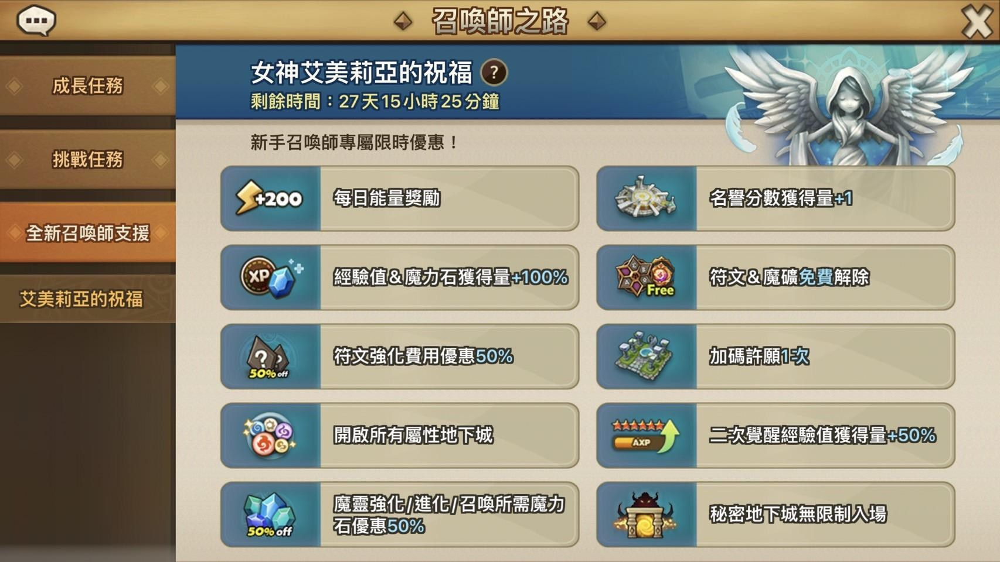
原作者历史截图：图内繁体文字保留原样，角色、符文与数值须结合本节核对说明。

（完ＥＮＤ）
以上，有错误部分，也欢迎各位点出，我有空在滚动式修正错字或观念(?)。
以下为魔灵LINE社群，上述不足或更进阶的部分，可洽群内大神。
- 魔灵召唤（为什么10周年卷我只有抽到光暗4星QQ）
- 魔灵召唤Summoners war